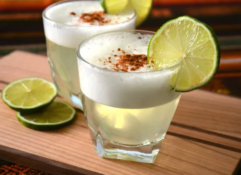

Pisco

A refreshing Peruvian cocktail combining pisco, lime juice, and simple syrup, delivering a harmonious blend of tangy and sweet flavors.
Ingredients
- Pisco (Peruvian grape brandy)
- Freshly squeezed lime juice
- Simple syrup
- Egg white (optional)
- Angostura bitters (for garnish)
- Ice
Steps
- Combine pisco, lime juice, simple syrup, and optional egg white in a shaker.
- Shake with ice.
- Strain into a glass.
- Add a touch of Angostura bitters.
- Serve and enjoy your Pisco Sour Peruano.